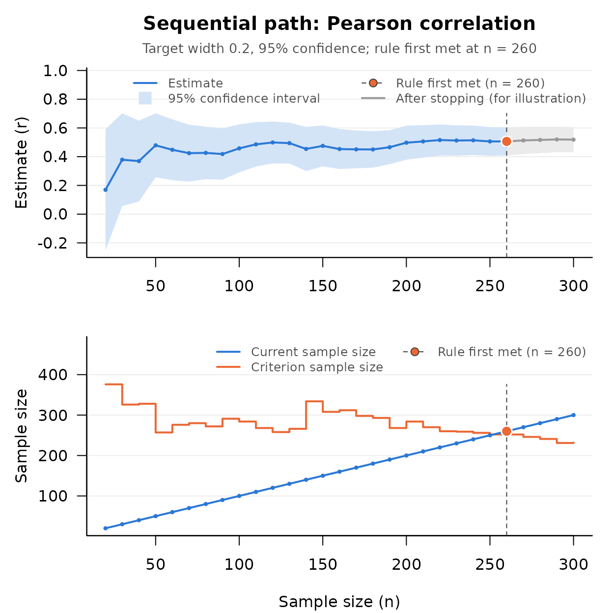

Sequential AIPE for Correlation Coefficients
Source:vignettes/seq-aipe-correlations.Rmd
seq-aipe-correlations.RmdThe Research Question
An information systems researcher is studying how strongly time on task relates to a usability score among users of a new interface. The parameter of interest is a population correlation coefficient, and the deliverable is an estimate accurate enough to guide design decisions: a confidence interval that runs from “trivial” to “strong” is uninformative, however significant the correlation. Designing the study for a sufficiently narrow confidence interval is the accuracy in parameter estimation (AIPE) approach (Maxwell, Kelley, & Rausch, 2008).
Fixed sample size planning for that goal
(DMAR::ss_aipe_r()) needs a planning value for the
correlation itself, and the required sample size depends strongly on it.
Kelley, Darku, and Chattopadhyay (2019) develop a sequential procedure
that needs no planning value and does not assume bivariate normality:
data are collected in stages, and a stopping rule built on an estimate
of the sampling variance of the sample correlation decides when the
interval is narrow enough. seq_aipe_r() implements it for
the Pearson product moment correlation, Kendall’s tau, and Spearman’s
rho. The same article extends the idea to the squared multiple
correlation coefficient, under multivariate normality;
seq_aipe_R2() implements that and is the subject of the
last section.
The Method
With n pairs, the sampling variance of the sample
correlation r is approximately the asymptotic variance divided
by n. For the Pearson correlation the asymptotic variance (xi
squared in the article) is a function of the joint central moments of
the two variables up to the fourth order (Equation 3 of the article,
from Lee, 1990); for bivariate normal data it reduces to (1 −
ρ2)2. The procedure estimates it from sample
moments; the estimate is the row xi_squared of the result
and is written V below. With width for the
target full width of the interval (omega in the article) and
z for the standard normal quantile of the confidence level,
the procedure has three parts.
-
The pilot sample size is the larger of 4 and
ceiling(2 * z / width)(Equation 9).seq_aipe_r_pilot()returns it; its argumentm_0raises the minimum. -
The stopping rule is met at the first n,
at or after the pilot sample size, with
n >= (4 * z^2 / width^2) * (V + 1 / n)(Equation 10). -
The confidence interval is the sample correlation
plus and minus
z * sqrt(V / n)(Equation 11). It is symmetric on the correlation scale. The article does not transform to Fisher’s z, and neither does the package, so in a very small sample a limit can fall outside the range from −1 to 1. Whenever the rule is met the width of the interval is at mostwidth.
Workflow
The researcher targets a 95% confidence interval with a full width of
0.20, and will check the rule after every 10 new users. The two
variables go to seq_aipe_r() as x and
y, paired by position. The data are simulated from a
bivariate normal population with a correlation of 0.5; in a real study
each call to new_users() is a new group of users.
set.seed(113)
new_users <- function(k, rho = 0.5) {
time_on_task <- rnorm(k)
usability <- rho * time_on_task + sqrt(1 - rho^2) * rnorm(k)
data.frame(x = time_on_task, y = usability)
}
m <- seq_aipe_r_pilot(width = 0.20, conf_level = 0.95)
m
#> [1] 20
users <- new_users(m)
out <- seq_aipe_r(users$x, users$y, width = 0.20, conf_level = 0.95)
out
#> Sequential check (Pearson correlation)
#>
#> Current n : 20
#> Criterion n : 376
#> Target width : 0.2
#> Confidence level: 95%
#> Coverage : asymptotic; assess with sensitivity analysis
#>
#> lower_limit : -0.2526412
#> r : 0.1692006
#> upper_limit : 0.5910425
#> xi_squared : 0.9264737
#> criterion_n : 376
#> current_n : 20
#>
#> Stopping rule met: FALSEThe rule is not met at the pilot, so the study goes on: users are
added ten at a time and the rule is checked after each addition, until
it is met
(vignette("step-by-step-sequential-workflow", package = "SMSD")
writes such a loop out). To show where it leads, the rest of the study
is simulated here in one piece, 280 more users in the order in which
they would have been recruited, and seq_path() applies the
check at every stage the study would have reached. A data frame whose
columns are named x and y supplies both
variables.
users <- rbind(users, new_users(280))
path <- seq_path(seq_aipe_r, users, width = 0.20, conf_level = 0.95,
by = 10)
path
#> Sequential path: Pearson correlation
#>
#> Stages checked : 29 (n = 20 to 300 by 10)
#> First check at : the pilot sample size
#> Target width : 0.2
#> Confidence level: 95%
#> Rule first met : n = 260
#> Estimate there : r = 0.50609 [0.4079719, 0.6042082]
#>
#> n estimate lower_limit upper_limit criterion_n is_satisfied
#> 20 0.1692006 -0.25264118 0.5910425 376 FALSE
#> 30 0.3788884 0.05615173 0.7016250 326 FALSE
#> 40 0.3692068 0.08750239 0.6509112 328 FALSE
#> ...
#> 280 0.5165558 0.42414973 0.6089619 241 TRUE
#> 290 0.5199800 0.43116964 0.6087904 231 TRUE
#> 300 0.5185644 0.43099217 0.6061366 232 TRUE
#>
#> The estimate to report is the one at n = 260. Later rows show what
#> the rule would have said had sampling continued; they are not grounds
#> for choosing a different stopping point.
plot(path)
The rule was first met at 260 pairs, and that is where a study run as
planned stops; the pairs simulated beyond that point are drawn in gray
and are not part of the result. At the stopping point the estimate is
0.506 with a 95% confidence interval from 0.408 to 0.604, which contains
the population value of 0.5. seq_report() writes the result
up:
seq_report(path)
#> Sample size was determined with the sequential accuracy in parameter
#> estimation procedure for the Pearson correlation coefficient (Kelley,
#> Darku, & Chattopadhyay, 2019), with a target full width of 0.2 for the
#> 95% confidence interval. The stopping rule was evaluated from the pilot
#> sample size (n = 20) onward, after every 10 additional observations,
#> and was first met at n = 260. At that sample size the estimate of the
#> Pearson correlation coefficient was 0.506, 95% CI [0.408, 0.604]. The
#> confidence level is asymptotic; meeting the width target does not
#> establish nominal coverage at this sample size.
#>
#> Reference
#> Kelley, K., Darku, F. B., & Chattopadhyay, B. (2019). Sequential
#> accuracy in parameter estimation for population correlation
#> coefficients. Psychological Methods, 24(4), 492–515.
#> doi:10.1037/met0000203One feature of this result deserves a second look. With the
population variance known, a width of 0.20 at a correlation of 0.5 would
call for 4 * qnorm(0.975)^2 / 0.20^2 * (1 - 0.5^2)^2 =
216.1, that is, 217 pairs. This study stopped later, at 260, because at
that point its estimate of the asymptotic variance was 0.652 where the
population value is (1 − 0.52)2 = 0.5625. The
estimate decides where a study stops, and in samples of this size it is
not a precise one. A study whose estimate happens to be too small stops
early, with an interval that is too narrow, and that is the subject of
the next section.
How Close the Coverage Is
The width guarantee is exact. The coverage guarantee is asymptotic: coverage approaches the confidence level as the target width narrows (Theorem 1 of the article). At the widths studies use it can fall short, and the article says so. For the population and the width used above (bivariate normal data, a correlation of 0.5, a width of 0.2), with one pair added at a time, its Table 2 (p. 498) reports a mean final sample size of 204 and coverage of 0.90 for the 95% interval; at a width of 0.1 the coverage is 0.95, with a mean final sample size of 857. Its Appendix D (p. 514) traces the shortfall to the estimate of the asymptotic variance, which is built from ratios of sample moments and tends to be too small when the sample is small, so that the rule is met early and the interval is too narrow.
Simulations of seq_aipe_r() as shipped show how the
shortfall depends on the design. The figures are for bivariate normal
data, a 95% Pearson interval, the default pilot, and one pair added at a
time. They are quoted from two help pages, named in the last column,
which give the replication counts.
| Population correlation | Target width | Coverage | Help page |
|---|---|---|---|
| 0.4 | 0.4 | 0.78 | ?seq_aipe_sensitivity |
| 0.4 | 0.2 | 0.93 | ?seq_aipe_sensitivity |
| 0.4 | 0.1 | 0.95 | ?seq_aipe_sensitivity |
| 0.8 | 0.4 | 0.69 | ?seq_aipe_r |
| 0.8 | 0.2 | 0.69 | ?seq_aipe_r |
| 0.9 | 0.1 | 0.45 | ?seq_aipe_sensitivity |
| 0.9 | 0.025 | 0.90 | ?seq_aipe_sensitivity |
Two things stand out. A wide target does poorly whatever the
correlation. And a strong correlation does poorly even at a target that
would be narrow for a moderate one, because a strong correlation is
estimated with little sampling error: the rule can be met with few
pairs, and in samples that small the variance estimate is often zero or
negative, and otherwise tends to run low. A zero or negative estimate is
not used: the check reports the rule as not met, with a note, and
sampling continues
(vignette("seq-aipe-smd", package = "SMSD") shows such a
check). That removes most immediate stops with an interval a fraction of
the requested width, but not all of them, and it does not make the
estimate on which a study finally stops a good one. A positive estimate
below the article’s lower bound of n−3 is still
replaced by the bound, as the article prescribes, and the rule is then
met at once: 58 of 6,000 simulated studies with a correlation of 0.8
ended that way at a width of 0.4, and 10 of 2,000 at a width of 0.2
(?seq_aipe_r).
seq_aipe_r_sensitivity() shows what a planned Pearson
study should expect. For a correlation of 0.8 at a width of 0.2:
strong <- seq_aipe_r_sensitivity(true_value = 0.8, width = 0.20, G = 100,
seed = 113)
strong
#> term value
#> true_value 0.8
#> target_width 0.2
#> conf_level 0.95
#> replications 100
#> mean_n 41.66
#> median_n 33
#> sd_n 19.26069
#> mean_width 0.1195415
#> median_width 0.1333209
#> pct_width_within 100
#> coverage 0.66
#> pct_hit_max_n 0
#> pct_variance_unusable 41In this small run the coverage is 0.660 (Monte Carlo standard error 0.047), in line with the 0.69 in the table, which rests on 2,000 studies. The mean final interval is 0.120 wide where 0.20 was the target, and in 41 percent of the replications the variance estimate was unusable at one check or more.
What helps is a narrower target, a larger minimum pilot sample, or
both. With m_0 = 50 the coverage in these simulations was
0.93 for a correlation of 0.4 and 0.83 for a correlation of 0.8 at a
width of 0.2, and 0.92 and 0.83 at a width of 0.4. Neither remedy is a
cure when the correlation is very strong: for a correlation of 0.9 at a
width of 0.1, a pilot of 100 raised coverage from 0.45 to 0.69. Before
relying on an interval, run seq_aipe_r_sensitivity() at the
planned width and pilot for every correlation that is plausible, the
strongest included;
vignette("sensitivity-analysis", package = "SMSD") explains
its output.
Kendall’s Tau and Spearman’s Rho
The argument method selects the coefficient:
"pearson" (the default), "kendall", or
"spearman". The pilot, the form of the stopping rule, and
the form of the interval are the same (Equations 30 and 54 of the
article are the stopping rules); what changes is the estimate of the
asymptotic variance, which for the rank based coefficients is computed
from the ranks (Equations 27 to 29 for Kendall’s tau and 51 to 53 for
Spearman’s rho). The three coefficients estimate different population
quantities. For the bivariate normal population simulated above, with a
Pearson correlation of 0.5, Kendall’s tau is
2 / pi * asin(0.5) = 0.333 and Spearman’s rho is
6 / pi * asin(0.5 / 2) = 0.483.
stopped <- users[seq_len(attr(path, "stop_n")), ]
seq_aipe_r(stopped$x, stopped$y, width = 0.20, method = "kendall")
#> Sequential check (Kendall correlation)
#>
#> Current n : 260
#> Criterion n : 133
#> Target width : 0.2
#> Confidence level: 95%
#> Coverage : asymptotic; assess with sensitivity analysis
#>
#> lower_limit : 0.2587816
#> r : 0.3297297
#> upper_limit : 0.4006778
#> xi_squared : 0.3406896
#> criterion_n : 133
#> current_n : 260
#>
#> Stopping rule met: TRUE
seq_aipe_r(stopped$x, stopped$y, width = 0.20, method = "spearman")
#> Sequential check (Spearman correlation)
#>
#> Current n : 260
#> Criterion n : 239
#> Target width : 0.2
#> Confidence level: 95%
#> Coverage : asymptotic; assess with sensitivity analysis
#>
#> lower_limit : 0.3802483
#> r : 0.4757132
#> upper_limit : 0.5711781
#> xi_squared : 0.6168285
#> criterion_n : 239
#> current_n : 260
#>
#> Stopping rule met: TRUEEach coefficient has its own criterion, so a study must choose its coefficient before sampling begins; the pairs used here are those of the Pearson study up to its stopping point, reused only to show the calls.
In simulations of the rank based procedures as shipped (bivariate
normal data, a 95% interval, one pair added at a time), coverage for a
Pearson correlation of 0.4 was 0.94 for both coefficients at a width of
0.2, and 0.91 for Kendall’s tau and 0.87 for Spearman’s rho at a width
of 0.4. A strong association is the hard case for them as well: with a
Pearson correlation of 0.8 or −0.8, coverage was 0.91 to 0.92 for
Kendall’s tau and 0.87 to 0.88 for Spearman’s rho at a width of 0.2
(?seq_aipe_r). seq_aipe_r_sensitivity()
studies the Pearson coefficient only; for the other two, write the loop
by hand as the sensitivity vignette shows.
Tied Values
The variance estimators for Kendall’s tau and Spearman’s rho assume
continuous data. With tied values they are too small, so the rule is met
too early and the interval is too narrow. seq_aipe_r()
warns when method is "kendall" or
"spearman" and either variable has ties. Here the two
variables are cut into five ordered categories, as ratings would be:
rating <- function(v) cut(v, c(-Inf, -1, -0.3, 0.3, 1, Inf), labels = FALSE)
tied <- seq_aipe_r(rating(stopped$x), rating(stopped$y), width = 0.20,
method = "kendall")
#> Warning: The data contain tied values. The variance estimator for the kendall
#> correlation assumes continuous data and is too small when there are ties, so
#> the stopping rule can be met too early and the interval can be too narrow. With
#> ties the estimate is Kendall's tau-b, as stats::cor() returns it, which is not
#> the statistic the variance estimator belongs to (see 'Tied values' in the help
#> of seq_aipe_r()).The size of the problem was measured for bivariate normal data with a
correlation of 0.5 cut into five categories: at 200 pairs the variance
estimates averaged 78% (Kendall) and 85% (Spearman) of the actual
sampling variance, and 95% intervals at that fixed sample size contained
the population value 91% and 92% of the time (6,000 simulated samples;
?seq_aipe_r). For ratings with few categories, treat an
interval from these two methods as somewhat too narrow. The Pearson
procedure does not assume continuous data.
The Squared Multiple Correlation
How well do several predictors together account for a response? The
population squared multiple correlation coefficient answers that, and
Kelley, Darku, and Chattopadhyay (2019, pp. 503–507) extend the
sequential procedure to it. seq_aipe_R2() takes the
predictors (a matrix or data frame with one column per predictor) and
the response collected so far. Three things set it apart from
seq_aipe_r().
It assumes multivariate normality. The article
develops this procedure for multivariate normal data only, because no
distribution free interval for the squared multiple correlation was
available (p. 503). The assumption matters: both standard errors come
from normal theory and are too small for heavy tailed data, however
large the sample. In simulations with three predictors, a population
value of 0.50, and a target width of 0.10, coverage of the 95% interval
was 0.946 for multivariate normal data, 0.902 for a multivariate
t distribution with 10 degrees of freedom, and 0.788 with 5
degrees of freedom, and a narrower target did not help
(?seq_aipe_R2).
There is a choice of interval. The argument
ci_method selects the interval on which the stopping rule
is built. "wald", the default, is the symmetric interval
R2 ± z (2 R (1 −
R2)) / √n, with the asymptotic variance of
Olkin and Finn (1995) (Equation 59 of the article).
"log_transformed" is the interval of Bonett and Wright
(2011), formed for the logarithm of 1 − R2 and
transformed back (Equation 58). The Wald interval is the default because
the article concludes from its simulations that the procedure built on
it did better in terms of the sample size required (p. 506), and in 59
of the 60 conditions of its Tables 11 to 14 its coverage is also the
closer of the two to the confidence level. The log transformed
procedure, as published, has a pilot of only two more observations than
predictors and no correction term in its rule, so it can stop within a
few observations of its pilot. Neither interval is truncated to the
range from 0 to 1. The Wald stopping rule that the package implements
adds 1 / n to both factors of the estimated variance. Equation
63 of the article, as printed, subtracts it in the second factor; that
form does not reproduce the article’s own Tables 13 and 14, and
?seq_aipe_R2 gives the comparison.
The pilot sample size depends on the number of
predictors. seq_aipe_R2_pilot() therefore takes
p, the number of predictors.
A survey asks how well autonomy, supervisor support, and workload together predict job satisfaction. The aim is a 95% confidence interval for the population squared multiple correlation no wider than 0.25. In the simulated population the three predictors are independent with unit variance and the error variance is 1, so the population value is the sum of the squared coefficients over that sum plus 1.
set.seed(113)
coefficients <- c(0.45, 0.40, -0.30)
population_R2 <- sum(coefficients^2) / (sum(coefficients^2) + 1)
population_R2
#> [1] 0.3115318
survey <- function(n) {
predictors <- cbind(autonomy = rnorm(n), support = rnorm(n),
workload = rnorm(n))
satisfaction <- drop(predictors %*% coefficients) + rnorm(n)
list(x = predictors, y = satisfaction)
}
m <- seq_aipe_R2_pilot(width = 0.25, p = 3)
m
#> [1] 32
employees <- survey(m)
out <- seq_aipe_R2(employees$x, employees$y, width = 0.25)
out
#> Sequential check (squared multiple correlation, Wald interval)
#>
#> Current n : 32
#> Criterion n : 104
#> Target width : 0.25
#> Confidence level: 95%
#> Coverage : asymptotic; assess with sensitivity analysis
#>
#> lower_limit : 0.42985
#> R2 : 0.6324142
#> upper_limit : 0.8349784
#> xi_squared : 0.3418055
#> criterion_n : 104
#> current_n : 32
#>
#> Stopping rule met: FALSE
#>
#> Note: With 32 observations and 3 predictors the sample is small
#> relative to the number of predictors (fewer than 60
#> observations, 20 per predictor). The sample squared multiple
#> correlation then overestimates the population value, and in
#> simulations the interval of this procedure contained the
#> population value less often than the confidence level, far less
#> often the smaller the sample. This note does not change the
#> stopping rule. See 'Small Samples Relative to the Number of
#> Predictors' in the help of seq_aipe_R2().The rule is not met, and the result carries a note. With 32
observations and three predictors the sample value is 0.632 where the
population value is 0.312, and the interval at this stage does not
contain the population value. Drawing many pilots of this size from the
same population shows how much of that distance belongs to every small
sample and how much to this one. (withr::with_seed() keeps
these draws out of the random number stream of the study itself.)
pilot_values <- withr::with_seed(2019, replicate(1000, {
pilot <- survey(m)
summary(lm(pilot$y ~ pilot$x))$r.squared
}))
c(mean = mean(pilot_values), sd = sd(pilot_values))
#> mean sd
#> 0.3694451 0.1349230A pilot of 32 from this population has a sample value of 0.369 on
average, already 0.058 above the population value, with a standard
deviation of 0.135. The pilot of this study is 1.9 standard deviations
above that average: mostly chance, added to a bias that every small
sample has. Both intervals are built around the sample value, so an
interval from a sample this small can lie entirely above the population
value. That is what the note warns about. With p predictors and
n observations, the sample squared multiple correlation
overestimates the population value by roughly
(1 - population_R2) * p / n (?seq_aipe_R2),
which is 0.065 here, and the stopping rule does not correct for it. The
note is attached whenever an interval is reported from fewer than
p * max(20, 2 * p) observations (60 with three predictors,
200 with 10, 800 with 20). It does not change the stopping decision.
To show where the study leads, the remaining employees are simulated
in one piece and seq_path() applies the check after every
10. It cannot work out the pilot sample size for this procedure, because
that depends on the number of predictors, so the start is supplied.
rest <- survey(270)
employees <- list(x = rbind(employees$x, rest$x),
y = c(employees$y, rest$y))
path_r2 <- seq_path(seq_aipe_R2, employees, width = 0.25, by = 10,
start = seq_aipe_R2_pilot(width = 0.25, p = 3))
path_r2
#> Sequential path: squared multiple correlation, Wald interval
#>
#> Stages checked : 28 (n = 32 to 302 by 10)
#> First check at : the sample size supplied as 'start'
#> Target width : 0.25
#> Confidence level: 95%
#> Rule first met : n = 152
#> Estimate there : R2 = 0.408733 [0.2885454, 0.5289207]
#>
#> n estimate lower_limit upper_limit criterion_n is_satisfied
#> 32 0.6324142 0.4298500 0.8349784 104 FALSE
#> 42 0.5410703 0.3368840 0.7452565 130 FALSE
#> 52 0.4253438 0.2216140 0.6290736 155 FALSE
#> ...
#> 282 0.3391364 0.2493000 0.4289729 149 TRUE
#> 292 0.3464226 0.2581783 0.4346669 149 TRUE
#> 302 0.3533003 0.2665943 0.4400064 149 TRUE
#>
#> The estimate to report is the one at n = 152. Later rows show what
#> the rule would have said had sampling continued; they are not grounds
#> for choosing a different stopping point.The check at the stopping point is stored with the path, with any notes it carries, and it is the place to look before an interval is reported:
attr(path_r2, "final_check")
#> Sequential check (squared multiple correlation, Wald interval)
#>
#> Current n : 152
#> Criterion n : 146
#> Target width : 0.25
#> Confidence level: 95%
#> Coverage : asymptotic; assess with sensitivity analysis
#>
#> lower_limit : 0.2885454
#> R2 : 0.408733
#> upper_limit : 0.5289207
#> xi_squared : 0.5715668
#> criterion_n : 146
#> current_n : 152
#>
#> Stopping rule met: TRUESampling stopped at 152 employees, past the range in which the note applies and so without it, with an interval from 0.289 to 0.529 that contains the population value.
Many Predictors and Wide Targets
The coverage guarantee of this procedure is asymptotic as well, and
it can fail badly. The stopping rule takes no account of the number of
predictors beyond the pilot, so with a wide target or many predictors
the rule can be met while the sample is still small relative to the
number of predictors, with an interval that lies above the population
value. Simulations of the procedure as shipped, with the default
interval, multivariate normal data, a population value of 0.50, and a
95% level, gave these coverages (10,000 replications each; a blank cell
is a condition that was not run; ?seq_aipe_R2):
| Predictors | Target width 0.30 | Target width 0.20 | Target width 0.10 |
|---|---|---|---|
| 2 | 0.900 | 0.948 | |
| 5 | 0.845 | 0.942 | |
| 10 | 0.668 | 0.865 | 0.934 |
| 15 | 0.361 | 0.790 | |
| 20 | 0.071 | 0.903 |
The article’s own simulations cover 2, 5, and 10 predictors at widths
of 0.05 and 0.10. The article offers no remedy for the shortfall, and
the function does not alter the stopping rule to correct for it; it
attaches the note described above. What is in the user’s hands is the
target width and the pilot. With the pilot at the threshold of the note,
m_0 = p * max(20, 2 * p), coverage in simulations was
between 0.896 and 0.932 for 5, 10, and 20 predictors, population values
of 0.30 to 0.90, and widths of 0.20 and 0.30, at the price of a pilot of
800 observations with 20 predictors (?seq_aipe_R2).
seq_aipe_R2_sensitivity() runs the procedure for a
population value, width, and number of predictors, and is quick enough
to run for every design under consideration. For the survey above, and
for the same target with 10 predictors:
designs <- lapply(c(3, 10), function(p) {
seq_aipe_R2_sensitivity(true_value = population_R2, width = 0.25, p = p,
G = 500, seed = 113)
})
mean_n <- sapply(designs, function(out) out$value[out$term == "mean_n"])
coverage <- sapply(designs, function(out) out$value[out$term == "coverage"])
data.frame(
predictors = c(3, 10),
mean_n = mean_n,
coverage = coverage,
se_coverage = sqrt(coverage * (1 - coverage) / 500)
)
#> predictors mean_n coverage se_coverage
#> 1 3 147.032 0.916 0.01240516
#> 2 10 147.714 0.884 0.01432089In these runs the coverage is 0.916 for the survey as designed and
0.884 with 10 predictors; the standard errors in the last column are
those of 500 replications, and a design that will be reported deserves
10,000. A width of 0.25 is a wide target for this procedure, and a
narrower one does better. In a second set of runs with five predictors
and a population value of 0.50 (10,000 replications at each width),
coverage was 0.851 at a width of 0.30, 0.912 at 0.20, 0.936 at 0.10, and
0.949 at 0.05 (?seq_aipe_R2). The figures at 0.30 and 0.10
are not those of the table above, 0.845 and 0.942, because the runs are
separate; the differences are of the size Monte Carlo error produces,
each figure having a standard error of 0.002 to 0.004.
When a planning value is available, DMAR has a confidence interval
that inverts the exact sampling distribution of the sample squared
multiple correlation and does not rely on an approximate standard error,
DMAR::ci_R2(), and a fixed sample size planner built on
that interval, DMAR::ss_aipe_R2() (Kelley, 2008).
References
Bonett, D. G., & Wright, T. A. (2011). Sample size requirements for multiple regression interval estimation. Journal of Organizational Behavior, 32(6), 822–830. doi:10.1002/job.717
Kelley, K. (2008). Sample size planning for the squared multiple correlation coefficient: Accuracy in parameter estimation via narrow confidence intervals. Multivariate Behavioral Research, 43(4), 524–555. doi:10.1080/00273170802490632
Kelley, K., Darku, F. B., & Chattopadhyay, B. (2019). Sequential accuracy in parameter estimation for population correlation coefficients. Psychological Methods, 24(4), 492–515. doi:10.1037/met0000203
Lee, A. J. (1990). U-statistics: Theory and practice. Marcel Dekker.
Maxwell, S. E., Kelley, K., & Rausch, J. R. (2008). Sample size planning for statistical power and accuracy in parameter estimation. Annual Review of Psychology, 59, 537–563. doi:10.1146/annurev.psych.59.103006.093735
Olkin, I., & Finn, J. D. (1995). Correlations redux. Psychological Bulletin, 118(1), 155–164. doi:10.1037/0033-2909.118.1.155